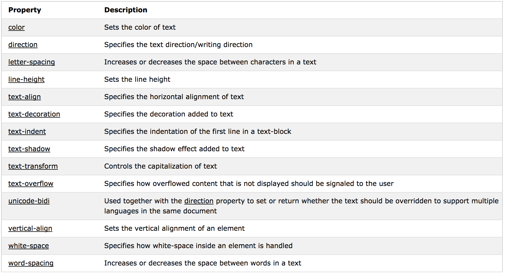

A,B,C...
Selector h, p, .class, #id
{Declaration property:value;
property:value;
}
/* Comentarios en archivo css */ (vs. < !--comentario en html-->)
Insertar CSS
El último declarado es el que tiene preferencia.
- Inline: < p style:...>< /p>
- Internal: < head > < style > ... < /style>< /head>
- External: < link rel="stylesheet" type="text/css" href="css.css">
Borders, Margins, Padding
Bordes
border: width style color


Margins
Deja espacio fuera del borde.
margin-bottom/left/right/top: px
margin: auto (center)/inherit (from parent element)/top right bottom leftpx
Dos márgenes juntos (de arriba o abajo) se harán uno, tomando la medida del mayor.
Padding
Deja espacio dentro del borde. Mismas características que margins.
Height, width
Aplican únicamente al contenido, no a márgenes, bordes... El ancho y altura final son suma de todo.
max/min-height/width: deja el tamaño del elemento dinámico; si se reduce el tamaño de la página, el elemento se ajusta. Si se define en %, una se ajusta a la otra.
Texto, fuentes

font-family: "Fuente con más de una palabra"/Font family, generic family (Times), serif/sans-serif/monospace
-style; -size: px; -weight: normal/bold; -variant: small-caps.
Layout
Display
display: property
Cómo mostrar un elemento.
Block-level: se extiende en toda la página: < div/h/p/form/header/footer/section >
Inline: < span/a/img >
hola Esto es un elemento span
Propiedades
display:
- none - oculta el elemento por completo y no ocupa espacio
- visibility:hidden - también oculta el elemento pero sigue ocupando el espacio asignado
- inline - cambias la propiedad default. Ejemplo: cambias la lista de ser block a ser inline y haces lista horizontal.
- block - hará que halla line breaks entre elementos
Position
position: static/relative/fixed/absolute/sticky;
| Static | Relative | Fixed | Absolute | Sticky |
|---|
| Default, va de acuerdo al "flow" normal de la página |
Relativo a su posición normal - position: relative; left/right/top/bottom: px | Asignas su posición bottom, left, right, upper y permanece ahí al mover la página. |
En relación con su antecesor. Div dentro de div |
Comienza en posición normal; cuando te mueves en la página permanece visible en una posición. |
Z-index: For overlaping elements. Le asignas un valor: los menores valores aparecen atrás, los mayores hasta adelante.
Overflow